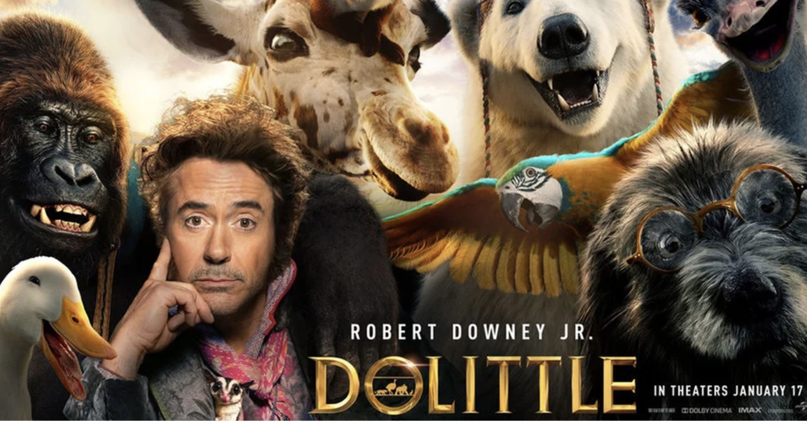
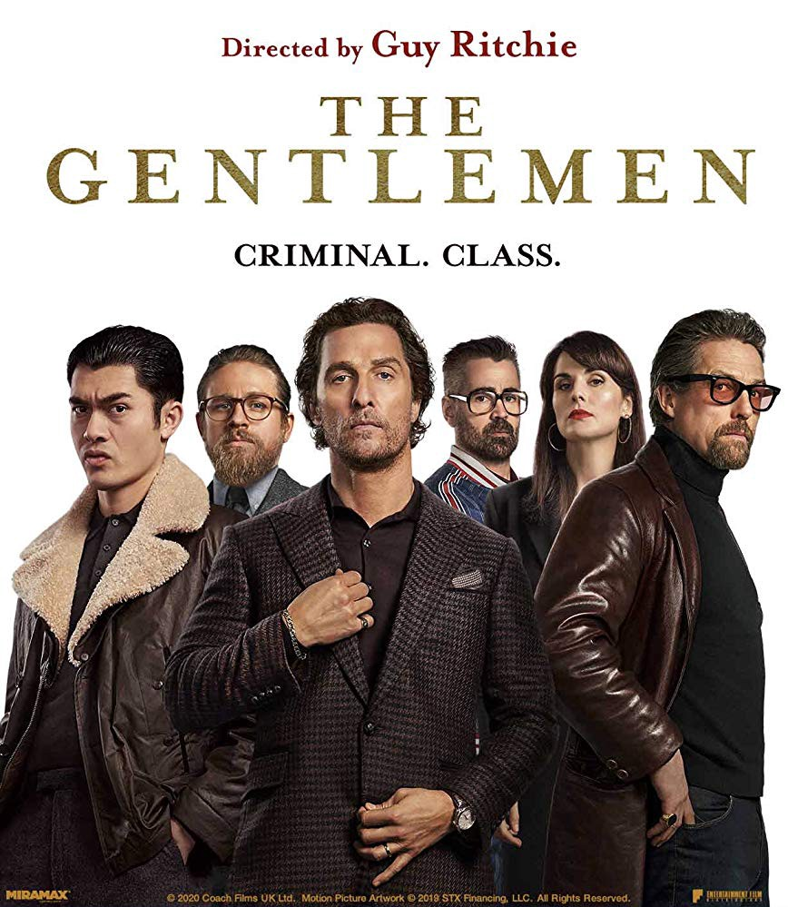
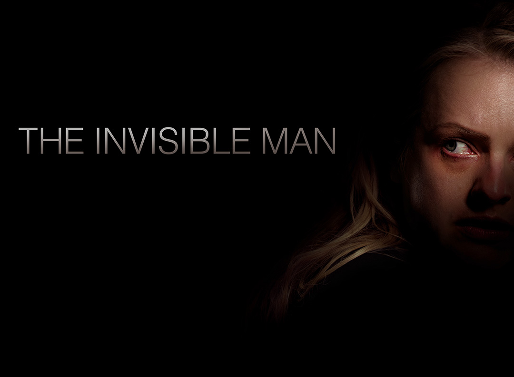
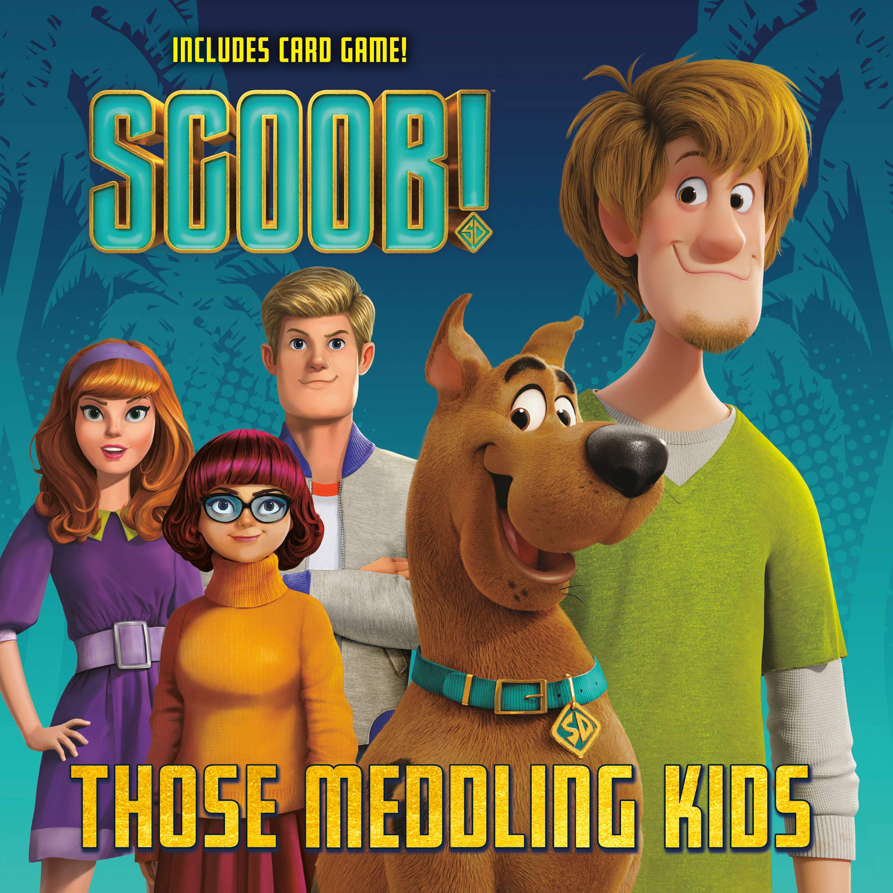

Movies
Here are some of the highest rated movies of 2020 to watch at home. There is no specific order and while some of these need to be rented or bought, some listings will also be free to watch.
Bad Boys For Life
The wife and son of a Mexican drug lord embark on a vengeful quest to kill all those involved in his trial and imprisonment -- including Miami Detective Mike Lowrey. When Mike gets wounded, he teams up with partner Marcus Burnett and AMMO -- a special tactical squad -- to bring the culprits to justice. But the old-school, wisecracking cops must soon learn to get along with their new elite counterparts if they are to take down the vicious cartel that threatens their lives.
Dolittle
A physician who can talk to animals embarks on an adventure to find a legendary island with a young apprentice and a crew of strange pets.
The Gentlemen
An American expat tries to sell off his highly profitable marijuana empire in London, triggering plots, schemes, bribery and blackmail in an attempt to steal his domain out from under him.
Sonic the Hedgehog

After discovering a small, blue, fast hedgehog, a small-town police officer must help him defeat an evil genius who wants to do experiments on him.
The Call Of The Wild

THE CALL OF THE WILD vividly brings to the screen the story of Buck, a big-hearted dog whose blissful domestic life is turned upside down when he is suddenly uprooted from his California home and transplanted to the exotic wilds of the Alaskan Yukon during the Gold Rush of the 1890s. As the newest rookie on a mail delivery dog sled team--and later its leader--Buck experiences the adventure of a lifetime, ultimately finding his true place in the world and becoming his own master.
The Invisible Man
Trapped in a violent, controlling relationship with a wealthy and brilliant scientist, Cecilia Kass (Moss) escapes in the dead of night and disappears into hiding, aided by her sister (Harriet Dyer, NBC's The InBetween), their childhood friend (Aldis Hodge, Straight Outta Compton) and his teenage daughter (Storm Reid, HBO's Euphoria). But when Cecilia's abusive ex (Oliver Jackson-Cohen, Netflix's The Haunting of Hill House) commits suicide and leaves her a generous portion of his vast fortune, Cecilia suspects his death was a hoax. As a series of eerie coincidences turns lethal, threatening the lives of those she loves, Cecilia's sanity begins to unravel as she desperately tries to prove that she is being hunted by someone nobody can see.
Scoob!
"SCOOB!" reveals how lifelong friends Scooby and Shaggy first met and how they joined with young detectives Fred, Velma and Daphne to form the famous Mystery Inc. Now, with hundreds of cases solved and adventures shared, Scooby and the gang face their biggest, most challenging mystery ever: a plot to unleash the ghost dog Cerberus upon the world. As they race to stop this global "dogpocalypse," the gang discovers that Scooby has a secret legacy and an epic destiny greater than anyone imagined.